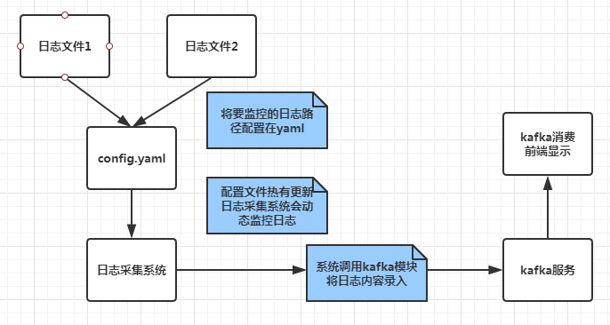
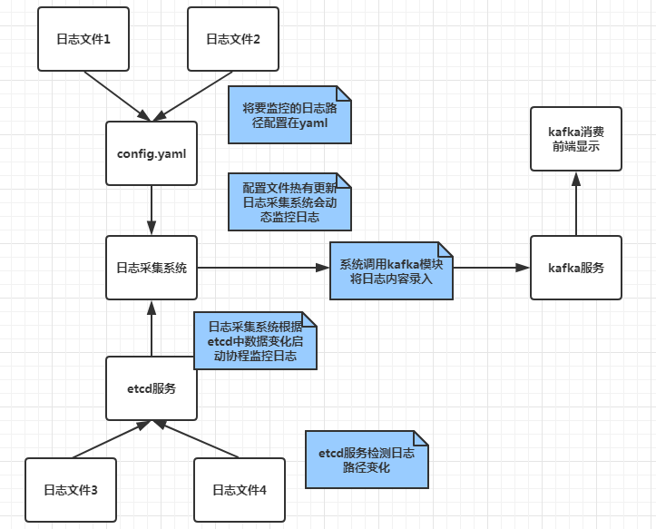
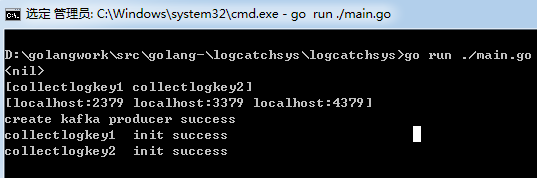
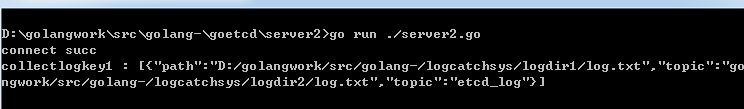
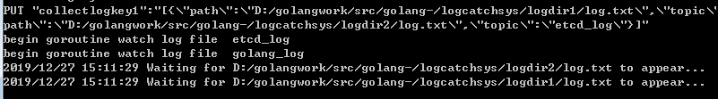
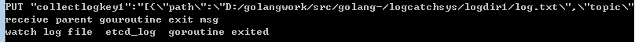
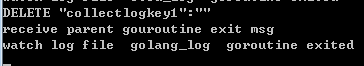

前情回顾
前文我们完成了日志采集系统基本功能，包括日志监控，日志采集，配置热更新，协程动态启动和关闭等。
本节目标
前文我们是通过将要监控的日志路径配置在配置文件中，根据配置文件热更新动态监控日志。
本节将etcd服务加入系统中，可以将要监控的日志文件路径和主题序列化为字符串保存到etcd中，这样系统可以监控etcd中该值得变化，从而动态启动协程和关闭协程监控指定日志。
这样可以通过etcd和配置文件两种方式监控日志。
图解系统监控日志流程
前文的日志系统流程如下

扩充后的日志系统流程如下

可见改进后的系统支持etcd服务检测日志路径变化，从而启动协程进行监控。
设计思路
我们在配置文件中添加几个key值，用来记录etcd存储的key。
1 我们的系统读取配置文件中的etcd的key值，启动协程A读取etcd中key的value，进而启动子协程B监控value记录的日志路径。
2 协程A还要监控etcd中的key对应的value是否有变化，如果value中有日志路径新增，则启动新的协程B监控新增日志。
如果value中有日志路径减少，关闭旧的协程B。
3 当配置文件中的key有变化，我们关闭原来的协程A及其子协程B，启动新的协程A，这样协程A继续启动新的子协程B监控日志。
而且新的协程A还要监控etcd的value是否有变化。
代码实现
简单阐述下部分代码，完整代码在文末。
1 | type EtcdLogConf struct { |
定义了两个结构，EtcdLogMgr用来管理协程A，EtcdLogConf用来管理协程B。
1 | func ConstructEtcd(etcdDatas interface{}, keyChan chan string, |
ConstructEtcd根据参数构造了一个map返回，这个map主要是管理A类型的协程。
这个map在主函数检测到配置文件中的etcd的key值变化会动态修改map中key对应的value，并且启动或关闭对应的协程A。
1 | //根据etcd中的日志监控信息启动和关闭协程 |
UpdateEtcdGoroutine功能就是通过config.yaml中etcd的key变化而动态启动和关闭协程。
1 | func WatchEtcdKeys(etcdMgr *EtcdLogMgr) { |
WatchEtcdKeys里实现了协程A从etcd中读取key对应的value，并且序列化出日志路径和主题。
然后启动子协程B执行WatchEtcdFile操作，WatchEtcdFile就是之前我们实现的监控指定路径的日志逻辑。
1 | func WatchEtcdFile(etcdFile *EtcdLogConf) { |
WatchEtcdFile内部调用了logtailf包的WatchLogFile，这个是之前我们实现的日志监控逻辑。
1 | func UpdateEtcdFile(etcdMgr *EtcdLogMgr, wresp *clientv3.WatchResponse) { |
UpdateEtcdFile实现了当etcd中的val有变化时，该函数对比之前的数据，启动新的协程监控新日志，
如果日志路径删除，则关闭监控该日志的协程
测试
在配置文件config.yaml中添加
1 | etcdkeys: |
etcdkeys为etcd服务中记录的key, etcdconfig为etcd服务的地址列表，我们启动的是个集群。
安装etcd服务后，启动etcd集群，这个百度一下就知道了。
然后我们启动日志采集系统，看到如下

因为etcd服务中没有collectlogkey1和collectlogkey2，所以我们的采集系统没有输出监控信息。
但是采集系统已经启动协程A监控这两个key了，当etcd中这两个key有value或改变，协程A会启动协程B监控日志。
我们通过测试程序向etcd写入日志路径信息

我们向collectlogkey1写入了两个日志路径，可以看到采集系统协程A检测到etcd变化从而启动了协程B监控这两个日志

如果我们修改etcd中collectlogkey1的值，改为只监控一个日志，日志采集系统会动态关闭无用的协程B

如果我们将collectlogkey1从etcd中删除, 那么采集系统会自动关闭监控collectlogkey1的协程A的所有子协程B。

总结
通过增加etcd服务监控，使系统的功能更全面。通过配置文件中etcd的多个key,主协程启动并管理多个协程A，
而每个协程A根据etcd中key对应的value启动多个协程B，协程B监控指定日志的变化。
这种协程嵌套使用一定要注意协程异常退出和正常退出这两种情况，以及资源回收问题。
当协程A异常退出时，主协程重启协程A，当协程B异常退出时，协程A重启协程B。
当协程A正常退出时，通知其下所有子协程B正常退出。
源码下载
https://github.com/secondtonone1/golang-/tree/master/logcatchsys
感谢关注公众号